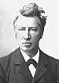
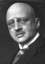
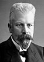
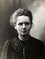
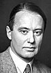
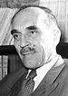

El Premio Nobel de Química (en sueco, Nobelpriset i Kemi) es entregado anualmente por la Academia Sueca a «científicos que sobresalen por sus contribuciones en el campo de la química». Es uno de los cinco premios Nobel establecidos en el testamento de Alfred Nobel, en 1895, y que se otorgan a todos aquellos individuos que realizan contribuciones notables en la química, la física, la literatura, la paz y la fisiología o medicina
Según lo dictado por el testamento de Nobel, este reconocimiento es administrado directamente por la Fundación Nobel y concedido por un comité conformado por cinco miembros que son elegidos por la Academia Sueca. El primer premio Nobel de química fue otorgado en 1901 a Jacobus Henricus van't Hoff, de los Países Bajos. Cada destinatario recibe una medalla, un diploma y un premio económico que ha variado a lo largo de los años. En 1901, van' t Hoff recibió 150 782 coronas suecas, equivalentes a 7 731 004 coronas de diciembre de 2007. En 2008, el premio se otorgó a Osamu Shimomura, Martin Chalfie y Roger Y. Tsien, quienes compartieron la cantidad de 10 000 000 de coronas suecas (algo más de 1 millón de euros, equivalente a 1,4 millones de dólares de los Estados Unidos).Adicionalmente , el galardón se presenta en Estocolmo, Suecia, en una celebración anual que se realiza cada 10 de diciembre, fecha del aniversario de la muerte de Alfred Nobel.
Al menos 25 de los galardonados han recibido el premio Nobel por sus contribuciones en química orgánica, más que cualquier otro campo de la química. Dos ganadores del Premio Nobel en química, los alemanes Richard Kuhn (1938) y Adolph Butenandt (1939), no pudieron aceptar el premio debido a la prohibición del gobierno de la Alemania nazi. Más tarde, recibirán una medalla y un diploma, pero no el dinero. Frederick Sanger es el único laureado que ganó el premio en dos ocasiones, en 1958 y 1980. Otros dos también ganaron premios Nobel en otros campos: Marie Curie (física en 1903, química en 1911) y Linus Carl Pauling (química en 1954, paz en 1962). Siete mujeres han ganado el premio: Marie Curie, Irène Joliot-Curie (1935), Dorothy Crowfoot Hodgkin (1964), Ada E. Yonath (2009), Frances Arnold (2018), Emmanuelle Charpentier y Jennifer Doudna (2020). Hasta el año 2015, el premio ha sido otorgado a 171 personas. Ha habido ocho años en que no se entregó el premio Nobel de química, en algunas ocasiones por declararse desierto y en otras por la situación de guerra mundial y el exilio obligado de varios miembros del comité.
A continuación se observaran algunos de los mas importantes ganadores del premio novel de química
| Año | Galardonado | Motivación |
|---|---|---|
| 1901 |  Van 't Hoff | Por el descubrimiento de las leyes de la dinámica química oral y de la presión osmótica en disoluciones |
| 1902 | Hermann Fischer | Por su trabajo en las síntesis de azúcares y purinas |
| 1907 | Eduard Buchner | Por sus investigaciones bioquímicas y su descubrimiento de la fermentación fuera de las células |
| 1911 | Marie Curie | Por el descubrimiento del radio y el polonio, el aislamiento del radio y el estudio de la naturaleza y compuestos de este destacable elemento químico |
| 1948 | Arne Tiselius | Por sus investigaciones en electroforesis y análisis por adsorción, especialmente por sus descubrimientos acerca de la naturaleza compleja de las proteínas del suero |
| 1948 | Nicolay Semyonov | Por sus investigaciones sobre los mecanismos de las reacciones químicas |